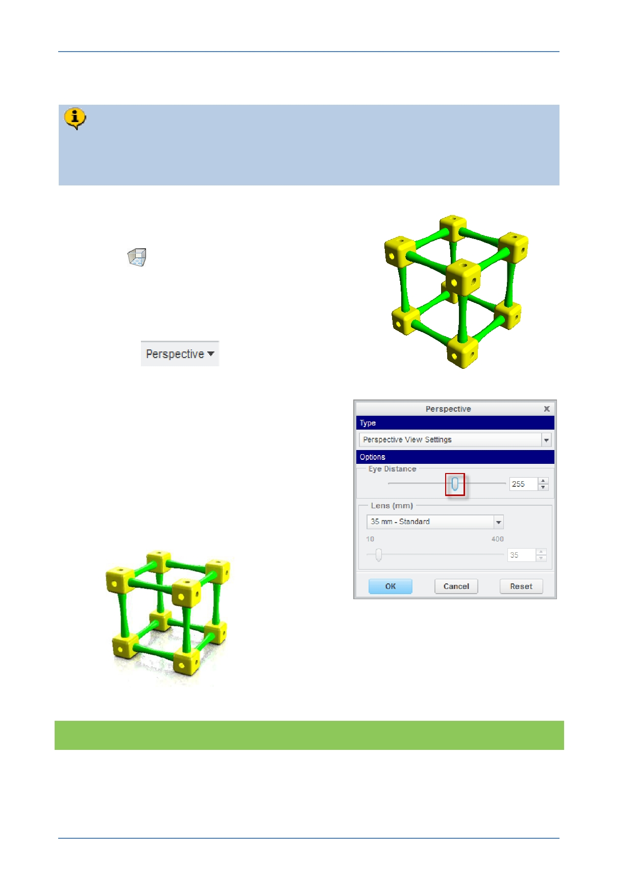

PTC Academic Program
Step 3: Adding perspective
Perspective adds realism to the render by reducing the apparent size of objects
as they get further away. An understanding of photography and illustration can
help achieve the results you want.
1. Apply perspective:
In the Render tab, start the Perspective
View
tool.
A default value for perspective will be applied.
You will probably want to adjust the amount of
perspective.
In the Perspective group of the Render tab,
click on
to open the
perspective dialog box.
Use the Eye distance slider combined with
zooming and spinning until you see the
amount of perspective you want.
2. Click OK to close the Perspective dialog
box.
Below is an example render using Draft quality
and Perspective.
What have you learned?
Perspective – applying to the model, adjusting.
© 2012 PTC
Creo Parametric 2.0 Primer
Page 86